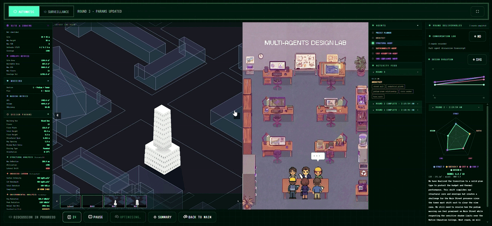
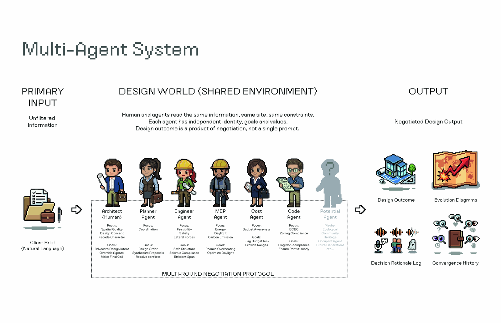
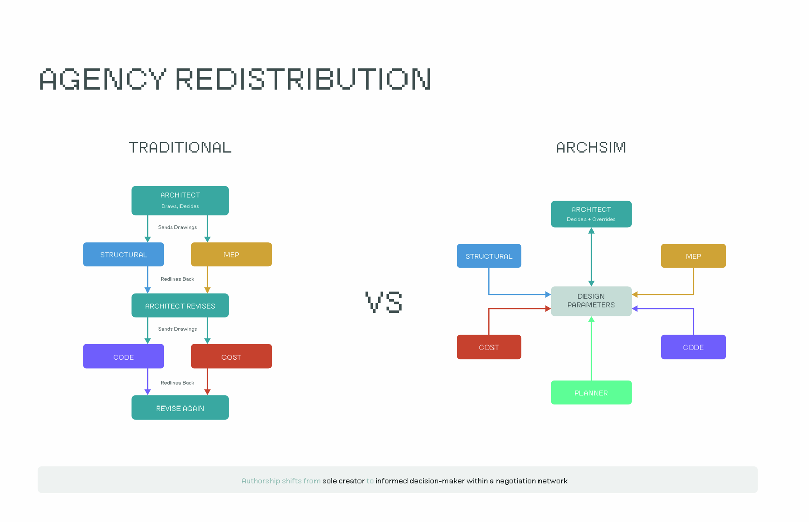

M.Arch thesis · Multi-agent AI · Schematic design
Multi-agent AI for early-stage architectural design.
ArchSim is a working prototype of a multi-agent negotiation system for schematic design. A reasoning layer of specialised AI consultants — structural, MEP, cost, and code — deliberates over an evidence layer of live parametric simulation, coordinated by a planner agent and supervised by a human architect. The system is the constructive inquiry of Who Designs: Architectural Agency Negotiating Between Humans and Machines.
Author
Karl Lam
Program
M.Arch · UBC SALA
Year
2026

01 · The negotiation
A natural-language client brief is parsed into design parameters, and a planner agent sequences rounds of negotiation between four specialist consultants — each grounded in real engineering data: Karamba structural analysis, Ladybug environmental simulation, BC cost data, and the BC Building Code with City of Vancouver zoning bylaws. Every decision and its rationale is recorded in an auditable log, and a constrained multi-disciplinary optimisation pass consolidates the deliberation into a final design.

02 · The architecture
Three layers hold the system together: LLM agents argue in the reasoning layer; the architect decides and ratifies in a browser interface; and Grasshopper with Karamba3D and Ladybug Tools supplies live structural and environmental evidence. A lightweight bridge marshals data between browser and model, so authority over the design is redistributed — but never fully handed over.
